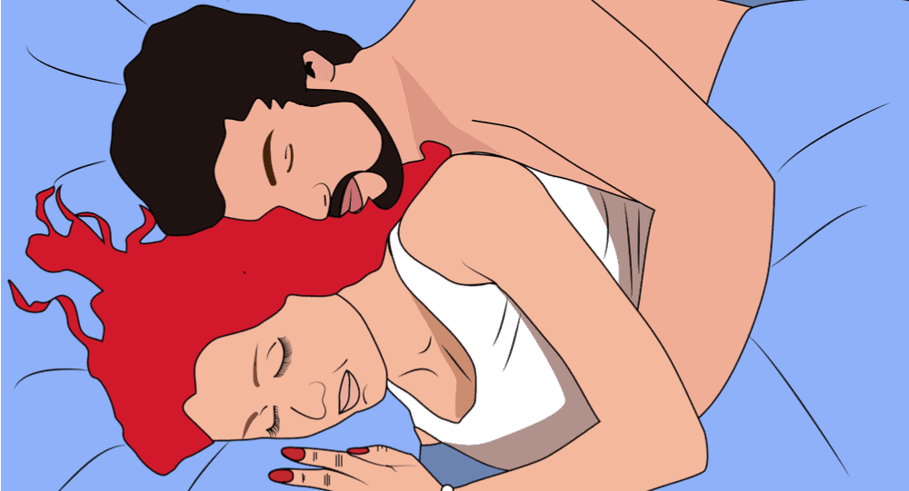

Here’s Why Some People Don’t Like Kissing During Sex (Yes, It’s Normal)
"I don't let men kiss me when I'm sleeping with them."
What’s your opinion on kissing during sex? In movies, it looks like they always go together,
but sometimes you don’t like kissing while having sex.

What makes some people
prefer sex without kissing?
Young people are more prone to find kissing during sex “too intimate,” according to a 2019 study published in the Journal of Sex & Marital Therapy. 20% of people under 30 who didn’t kiss their last partner said kissing would have been too intimate. 1 in 5 people who haven’t kissed during sex said it’s because they don’t like kissing.
During their last sexual encounter, people didn’t kiss for these reasons:
“I hate kissing” (21%)
“My partner wasn’t into kissing” (20%)
“I didn’t want to kiss him/her” (16%)
“I was worried about my breath or my partner’s breath” (11%)
“We kissed, but it wasn’t that passionate” (10%)
“Kissing this person would have been too intimate” (7%)
Other (10%)
How common is kissing during sex?
One thousand four hundred ninety-three people were asked about their last sexual encounter, specifically kissing, cuddling, and massaging. 87% of people kissed, 70% cuddled, and 23% massaged. One in three people did all three of these things. It’s exciting and perhaps depressing to find out that people in monogamous relationships kiss less. 61% of coupled-up people said they kissed their partner the last time they had sex. Additionally, monogamous couples are significantly less likely to cuddle (just 32% of people in relationships said they cuddled the last time they had sex). Researchers couldn’t figure out why, but sex in long-term relationships can change over time. People who kissed only during their first sex are least likely to have kissed during their last sex in their 40s.
During sex, there are different types of kissing.
Interestingly, 10% of people who said they had touched in the past later admitted to kissing, but “it was not very passionate.” In other words, people kissed but did not count it as a kiss because it was barely intimate. “Just as prior research has shown that people’s meanings of ‘sex’ vary, our data demonstrate that a kiss is not necessarily a kiss, with some respondents only counting certain kinds of kisses as ‘kisses,'” the researchers write. “This may suggest that some people feel that kisses should be or feel a certain way for them to ‘count’ as kisses.”
How kissing during sex relates to sexual intimacy.
Researchers say kissing and cuddling are essential aspects of postcoital affection and are associated with sexual and relationship satisfaction. Moreover, kissing, cuddling, and massage are all critical aspects of intimacy.” People who kissed were more likely to cuddle, and people who used at least one of the three acts (kissing, cuddling, or massage) were three times more likely to say they experienced a lot of emotional intimacy. However, only cuddling led to more emotional intimacy and more sexual pleasure. The more you kiss during sex, the less joy and intimacy you get. Cuddles can be more enjoyable for people than kissing. These findings show that sex looks different for everyone. We have other interests, desires, and turn-ons, so it’s important never to assume what someone wants from sex. As long as it’s safe, consensual, and pleasurable, do it.